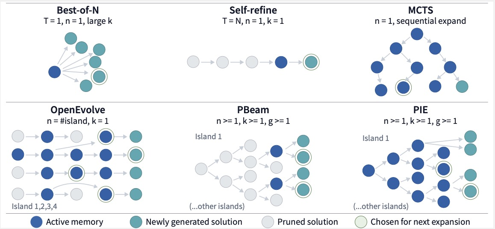
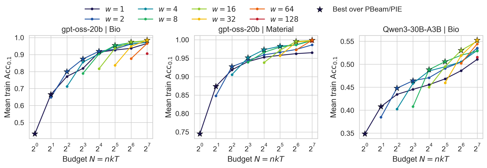
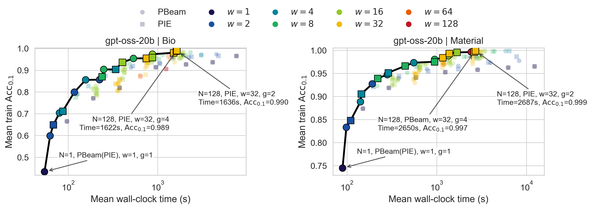
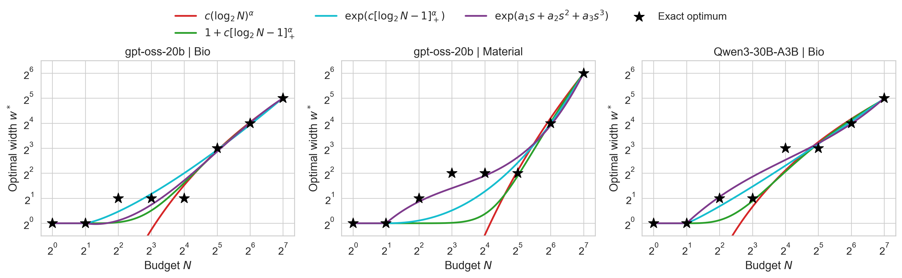
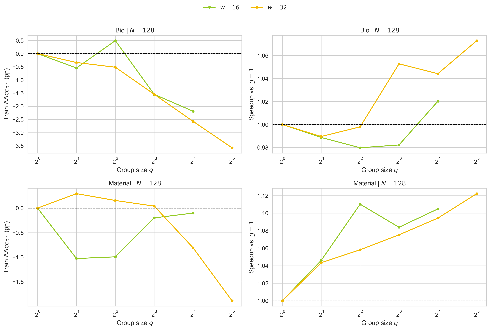
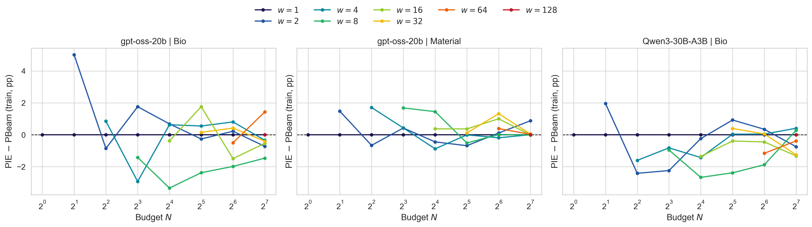
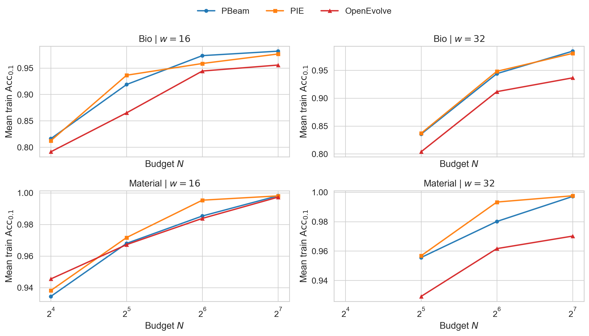

Balancing Exploration and Exploitation in Compute Allocation
Test-time scaling (TTS) improves language model reasoning by using additional inference-time compute. Most prior work focused on closed-ended tasks with known answers, such as mathematics and code generation. Scientific discovery is different because it involves a much larger, open-ended search space. Prior research has largely treated TTS as a way to improve performance with more compute or to help smaller models approach the performance of larger ones. We argue instead that open-ended scientific discovery requires expanding the TTS design space itself. Under a fixed compute budget, the central challenge is to balance exploration and exploitation. To study this, we formulate LLM-driven scientific discovery as an iterative search process that unifies common TTS methods, including Best-of-N, sequential refinement, tree search, and recent evolution-based systems. To isolate the role of compute allocation from that of complex designs (e.g., prompt engineering), we compare different allocation strategies under minimal control flows. On automated equation discovery tasks, we find that search width is the most important allocation parameter. The optimal width increases with the compute budget according to a empirical law. Optimizing compute allocation also improves wall-clock efficiency by increasing parallelism and reducing synchronization overhead. These results show that, given a reliable verifier, principled control of exploration and exploitation is key to scaling scientific discovery at test time.
We formulate LLM-driven scientific discovery as a unified search process (sample, generate, evaluate, prune), isolating compute allocation from domain-specific heuristics. Our framework compares simple, highly parallel controllers Parallel Beam Search (PBeam) and Parallel Iterative Expansion (PIE) against common baselines and complex, over-engineered systems. We demonstrate that the success of evolutionary methods often stems from clever compute allocation rather than intricate heuristics. By focusing on a reduced design space of width (\(w\)), branching (\(n\): the number of expanded nodes; \(k\): the number of new expansions for the same node. \(w=n\times k\)), and grouping (\(g\)), we show that minimal control flows can achieve superior performance and efficiency in vast, open-ended scientific search spaces without unnecessary engineering complexity.


As mentioned above, in our scientific equation discovery benchmark, search width \(w\) emerges as the dominant allocation parameter. Scaling search width not only improves equation discovery accuracy but also significantly enhances wall-clock efficiency. By increasing model inference parallelism, larger widths reduce the sequential refinement rounds needed for a fixed budget. For instance, on the Bio dataset, increasing search width from 1 to 32 reduces total runtime by nearly 80% while simultaneously improving discovery performance.

Crucially, scaling width not only improves accuracy but also substantially enhances wall-clock efficiency. Because larger widths increase model inference parallelism and reduce the number of sequential refinement rounds (\(T = N / w\)), the wall-clock Pareto frontier favors moderate-to-large widths. For example, on the Bio dataset, shifting from greedy refinement (\(w=1\)) to width \(32\) reduces runtime by nearly \(80\%\) (from 7622s to 1586s) while simultaneously improving train \(\operatorname{Acc}_{0.1}\) from \(0.965\) to \(0.984\).
We identify a systematic relationship where the optimal search width \(w^*\) grows with the compute budget \(N\) according to a poly-logarithmic hinge-log scaling law: \[w^* = 1 + c[\log_2 N - 1]_+^\alpha\] This empirical law allows practitioners to predict optimal compute allocations across models and domains without exhaustive searches. Specifically, we construct four candidate laws to model the relationship between the optimal width \(w^*\) and the compute budget \(N\) for comparison. The goodness-of-fit of these functions is evaluated in the figure below, and detailed discussions can be found in our paper.

While width dictates the primary time--quality trade-off, grouping acts mainly as a secondary systems knob. Holding the total budget \(N\) and the global width \(w\) fixed, increasing the number of groups \(g\) yields a modest wall-clock speedup because synchronization occurs within groups of size \(w/g\) rather than across all \(w\) expansions. This reduces idle time from stragglers and improves hardware utilization when model or verifier latency is heterogeneous. Empirically, moving from \(g=1\) to \(g=8\) yields up to a \(1.075\times\) speedup. By contrast, the effect on search quality is weak and not consistently positive: in our equation-discovery benchmark, island-style isolation does not provide a reliable diversity benefit once width is already chosen. Over-grouping can even hurt, because it reduces both the per-group width \(w/g\) and the per-group budget \(N/g\), pushing each group toward a narrower search regime than the one preferred by the global budget. We therefore treat \(g\) as a throughput parameter rather than a primary search-quality parameter.

Once the global width \(w = nk\) is fixed, the remaining design choices have a comparatively minor effect on performance. First, the exact decomposition of \(w\) into \(n\) and \(k\) matters much less than choosing the right width in the first place (see the table).
| Domain | Algorithm | Regime | Best \((n,k)\) | Train \(\operatorname{Acc}_{0.1}\) | Rel. gap |
|---|---|---|---|---|---|
| Bio | PBeam | Population-heavy | \((16,2)\) | 0.9816 | 0.28% |
| Bio | PBeam | Balanced | \((4,8)\) | 0.9844 | 0.00% |
| Bio | PBeam | Branching-heavy | \((1,32)\) | 0.9801 | 0.44% |
| Bio | PIE | Population-heavy | \((16,2)\) | 0.9804 | 0.00% |
| Bio | PIE | Balanced | \((8,4)\) | 0.9612 | 1.95% |
| Bio | PIE | Branching-heavy | \((2,16)\) | 0.9794 | 0.10% |
| Material | PBeam | Population-heavy | \((16,2)\) | 0.9857 | 1.15% |
| Material | PBeam | Balanced | \((8,4)\) | 0.9971 | 0.00% |
| Material | PBeam | Branching-heavy | \((1,32)\) | 0.9876 | 0.95% |
| Material | PIE | Population-heavy | \((32,1)\) | 0.9884 | 0.92% |
| Material | PIE | Balanced | \((4,8)\) | 0.9975 | <0.01% |
| Material | PIE | Branching-heavy | \((2,16)\) | 0.9976 | 0.00% |
Second, the difference between PBeam and PIE is also small: their train \(\operatorname{Acc}_{0.1}\) gap usually stays within ±2% across budgets and widths (see the figure below).

We also compare PBeam and PIE against OpenEvolve under strictly matched global budgets. This comparison supports our main claim that, on this benchmark, the dominant gains come from getting the global compute allocation right, whereas additional heuristics such as island engineering, crossover, or specialized prompting appear to be secondary.

Recommended top-down strategy for deploying external test-time search
If you find our paper useful, please consider citing us.
@article{lin2026testtimescaling,
title={Test-Time Scaling for Scientific Equation Discovery},
author={Haowei Lin and Hubert Lim and Xiangyu Wang and Letian Huang and Di He},
year={2026},
journal={Preprint}
}